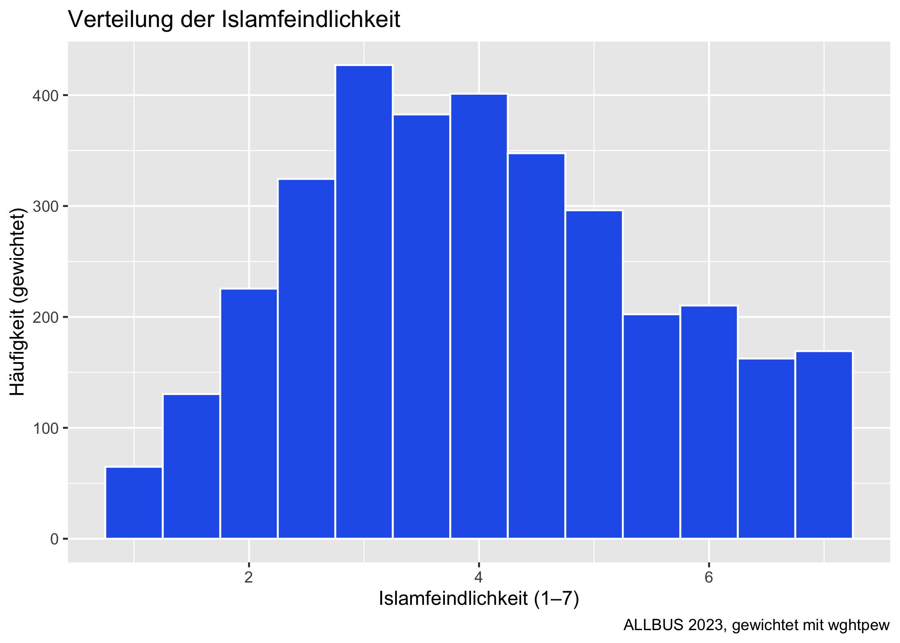
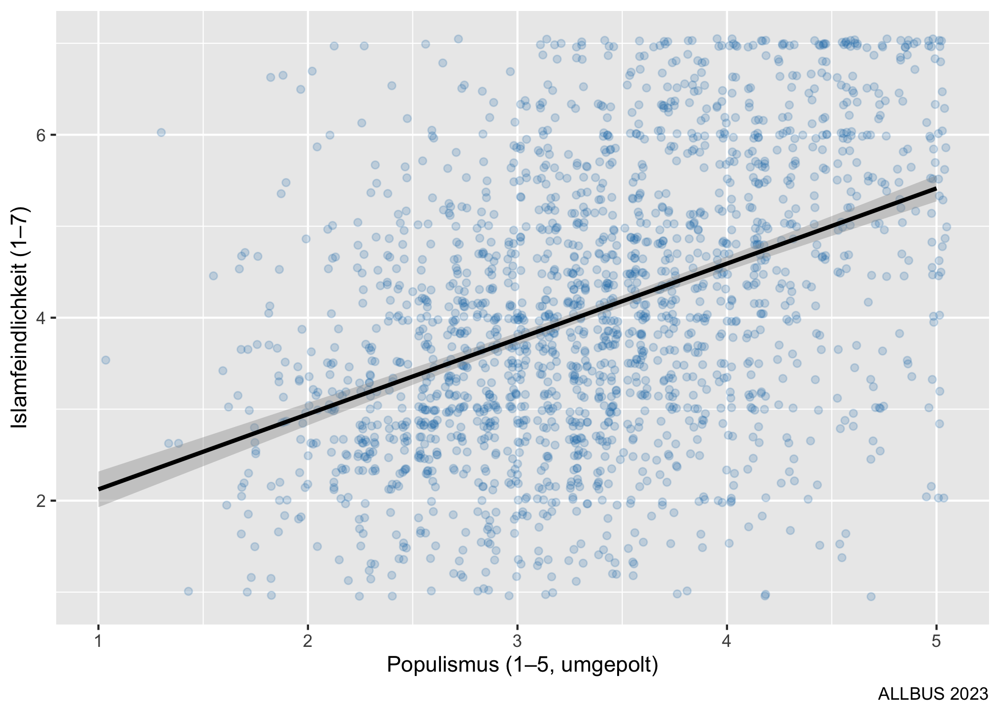

allbus |> frequency(eastwest, weights = wghtpew)
##
## Weighted Frequency Analysis Results
## -----------------------------------
##
## eastwest (ERHEBUNGSGEBIET (WOHNGEBIET): WEST - OST)
## # total N=5246 valid N=5246 mean=1.17 sd=0.37 skewness=1.77
##
## +------+--------------------+--------+--------+--------+--------+
## |Value | Label | N | Raw % |Valid % | Cum. % |
## +------+--------------------+--------+--------+--------+--------+
## | 1 | ALTE BUNDESLAENDER | 4363 | 83.16 | 83.16 | 83.16 |
## | 2 | NEUE BUNDESLAENDER | 883 | 16.84 | 16.84 | 100.00 |
## +------+--------------------+--------+--------+--------+--------+
## |Total | | 5246 | 100.00 | 100.00 | |
## +------+--------------------+--------+--------+--------+--------+5 Uni- und Bivariate Datenanalyse
Nachdem du in Kap. 3 die Datenpräp-Pipeline gebaut hast, beginnt jetzt die eigentliche Analyse. Wir gehen Schritt für Schritt von der einzelnen Variable bis zu Zusammenhängen zwischen zwei Variablen — und beantworten dabei die ersten Teilfragen unserer Mini-Studie:
Wie sieht die Verteilung von Islamfeindlichkeit in Deutschland 2023 aus? Unterscheiden sich Ost und West? Hängt Islamfeindlichkeit mit Populismus zusammen?
Was du nach diesem Kapitel kannst
- Häufigkeitsverteilungen einer Variable berichten — gewichtet und ungewichtet.
- Mittelwert, Median, Streuung und Standardfehler bestimmen.
- Kreuztabellen mit Chi-Quadrat-Test und Effektgrößen lesen.
- Pearson-, Spearman- und Kendall-Korrelationen berechnen und interpretieren.
- Mittelwerte zweier Gruppen mit einem t-Test vergleichen.
- Mittelwerte mehrerer Gruppen mit einer einfaktoriellen ANOVA vergleichen.
- Nicht-parametrische Alternativen anwenden, wenn Voraussetzungen verletzt sind.
- Erste Grafiken zu deinen Befunden erstellen.
5.1 Über Gewichtung — kurz und einprägsam
In der ALLBUS-Stichprobe sind die neuen Bundesländer gewollt überrepräsentiert, damit Aussagen auch dort statistisch belastbar sind. Für deutschlandweite Schätzungen brauchst du daher das personenbezogene Ost-West-Gewicht wghtpew. Wenn du Gewichte ignorierst, sind deine Aussagen über „die Deutschen” verzerrt.
Tipp
SPSS → R. In SPSS aktivierst du Gewichtung einmal session-weit mit WEIGHT BY wghtpew. In R ist das anders: jede Funktion, die Gewichtung braucht, bekommt das Argument weights = einzeln. Das wirkt am Anfang umständlich, ist aber transparent — du siehst auf einen Blick, ob eine Analyse gewichtet ist.
In mariposa heißt das Argument durchgängig weights = wghtpew — egal, ob du eine Häufigkeitstabelle oder eine Regression rechnest.
5.2 Univariate Statistik
5.2.1 Häufigkeitstabellen mit frequency()
frequency() aus mariposa ist das R-Pendant zu SPSS’ FREQUENCIES — gleicher Output (Wert, Label, N, Prozent, gültige Prozent, kumulierte Prozent) plus oben kurz die Streumaße.
Frage: Wie ist die Verteilung von Ost und West im gewichteten Sample?
Lesart. Die gewichteten Häufigkeiten spiegeln das tatsächliche Verhältnis Ost/West in der deutschen Bevölkerung — ca. 83% West, 17% Ost. In den ungewichteten Rohdaten wäre Ost stärker vertreten gewesen.
Für eine ganze Itembatterie kombinierst du frequency() mit tidyselect-Helfern:
allbus |> frequency(mm01:mm06, weights = wghtpew)
5.2.2 Deskriptive Statistik mit describe()
Mit describe() bekommst du Mittelwert, Median, Standardabweichung, Range, IQR und Schiefe für eine oder mehrere Variablen.
Frage: Wo liegt der durchschnittliche Skalenwert für Islamfeindlichkeit?
allbus |> describe(islamophobie, weights = wghtpew)
##
## Weighted Descriptive Statistics
## -------------------------------
## Variable Mean Median SD Range IQR Skewness Effective_N
## islamophobie 4.012 4 1.516 6 2.333 0.207 3006.2
## ----------------------------------------Lesart. Der gewichtete Mittelwert von rund 4 auf einer 1–7-Skala bedeutet: Deutschland liegt — gemittelt — in der Mitte der Skala, mit deutlicher Streuung (SD ≈ 1.5).
Mehrere Variablen gleichzeitig:
allbus |> describe(islamophobie, populismus, age, weights = wghtpew)
##
## Weighted Descriptive Statistics
## -------------------------------
## Variable Mean Median SD Range IQR Skewness Effective_N
## islamophobie 4.012 4.000 1.516 6 2.333 0.207 3006.2
## populismus 3.354 3.286 0.759 4 1.000 0.056 3204.6
## age 52.104 54.000 18.289 81 29.000 -0.009 4721.9
## ----------------------------------------5.2.3 Einzelne Kennwerte
Manchmal brauchst du nicht eine ganze Tabelle, sondern einen Wert — etwa für eine summarise()-Pipeline oder eine Caption. mariposa hat dafür gewichtete Einzel-Funktionen:
| Funktion | Was sie liefert |
|---|---|
w_mean() |
gewichteter Mittelwert |
w_median() |
gewichteter Median |
w_sd() |
gewichtete Standardabweichung |
w_se() |
gewichteter Standardfehler |
w_quantile() |
gewichtete Quantile |
w_var() |
gewichtete Varianz |
allbus |> w_mean(islamophobie, weights = wghtpew)
##
## Weighted Mean Statistics
## ------------------------
##
## --- islamophobie ---
## Variable weighted_mean Effective_N
## islamophobie 4.012 3006.2Im Zusammenspiel mit group_by()/summarise() baust du dir eigene Subgruppen-Tabellen:
allbus |>
filter(!is.na(eastwest)) |>
summarise(
n = n(),
mittelwert = w_mean(islamophobie, weights = wghtpew),
sd = w_sd(islamophobie, weights = wghtpew),
se = w_se(islamophobie, weights = wghtpew),
.by = eastwest
)
## # A tibble: 2 × 5
## eastwest n mittelwert sd se
## <dbl+lbl> <int> <dbl> <dbl> <dbl>
## 1 1 [ALTE BUNDESLAENDER] 3567 3.90 1.47 0.0279
## 2 2 [NEUE BUNDESLAENDER] 1679 4.55 1.61 0.0680Das ist die R-Variante zum SPSS-AGGREGATE mit WEIGHT BY — alles in einem Block, in einem Pipe-Fluss.
5.3 Bivariate Statistik
5.3.1 Kreuztabellen mit crosstab()
crosstab() aus mariposa erzeugt eine Kreuztabelle inklusive Zeilen-/Spalten-/Gesamtprozenten. Standard ist die Zeilenprozentuierung.
Frage: Verteilt sich Bildung anders in Ost und West?
allbus |>
crosstab(eastwest, educ, weights = wghtpew)
##
## Crosstabulation: eastwest × educ
## --------------------------------
## - Row variable: eastwest
## - Column variable: educ
## - Percentages: Row percentages
## - Weights variable: wghtpew
## - N (valid): 5133 (weighted)
## - Missing: 109
##
## +--------------------+--------------------+--------------------+--------------------+--------------------+--------------------+--------------------+--------------------+--------------------+
## | | educ |
## | eastwest | OHNE ABSCHLUSS | VOLKS-,HAUPTSCHULE | MITTLERE REIFE | FACHHOCHSCHULREIFE | HOCHSCHULREIFE | ANDERER ABSCHLUSS | NOCH SCHUELER | Total |
## +--------------------+--------------------+--------------------+--------------------+--------------------+--------------------+--------------------+--------------------+--------------------+
## | ALTE BUNDESLAENDER | 70 | 865 | 1163 | 544 | 1578 | 17 | 27 | 4265 |
## | row % | 1.6% | 20.3% | 27.3% | 12.8% | 37.0% | 0.4% | 0.6% | 100.0% |
## +--------------------+--------------------+--------------------+--------------------+--------------------+--------------------+--------------------+--------------------+--------------------+
## | NEUE BUNDESLAENDER | 11 | 104 | 361 | 95 | 292 | 2 | 2 | 868 |
## | row % | 1.2% | 12.0% | 41.6% | 11.0% | 33.7% | 0.2% | 0.2% | 100.0% |
## +====================+====================+====================+====================+====================+====================+====================+====================+====================+
## | Total | 80 | 969 | 1525 | 640 | 1871 | 19 | 29 | 5133 |
## +--------------------+--------------------+--------------------+--------------------+--------------------+--------------------+--------------------+--------------------+--------------------+Mit prop = "col" oder prop = "total" änderst du die Prozentuierungs-Richtung; mit show = "n" siehst du nur die Zellenzahlen.
5.3.2 Chi-Quadrat-Test mit chi_square()
Statt erst eine Kreuztabelle zu rechnen und dann den χ²-Test anzustoßen, gibt dir mariposa beides in einer Zeile — der Test kommt mit Effektgröße (Cramérs V):
Frage: Hängt Bildung und Region statistisch zusammen?
allbus |> chi_square(eastwest, educ, weights = wghtpew)
## Chi-Squared Test: eastwest × educ [Weighted]
## chi2(6) = 83.582, p < 0.001 ***, V = 0.128 (small), N = 5131Lesart. Du erhältst χ² mit Freiheitsgraden, p-Wert und Cramérs V. Faustregel für V: < 0.1 vernachlässigbar, 0.1–0.3 schwach, 0.3–0.5 moderat, > 0.5 stark.
5.3.3 Korrelation
Drei Korrelationskoeffizienten, drei Funktionen — alle akzeptieren weights =:
| Funktion | Skalenniveau | Wann sinnvoll |
|---|---|---|
pearson_cor() |
intervall, normalverteilt | klassischer linearer Zusammenhang |
spearman_rho() |
ordinal oder schief | wenn Linearität / Normalverteilung fragwürdig |
kendall_tau() |
ordinal, kleine N | robuste Variante, gut bei Bindungen |
Frage: Hängen Islamfeindlichkeit und Populismus zusammen?
allbus |> pearson_cor(islamophobie, populismus, weights = wghtpew)
## Pearson Correlation: islamophobie x populismus [Weighted]
## r = 0.406, p < 0.001 ***, N = 1903Lesart. Der gewichtete Pearson-r liegt bei etwa +0.41 — das ist ein klar positiver, moderater Zusammenhang. Wer hohe Werte auf der Populismus-Skala hat, tendiert auch zu höheren Werten bei Islamfeindlichkeit.
Eine ganze Korrelationsmatrix bekommst du, indem du mehrere Variablen oder einen tidyselect-Ausdruck übergibst:
allbus |> pearson_cor(starts_with("mm0"), weights = wghtpew)5.4 Mittelwertvergleiche
5.4.1 t-Test mit t_test()
Der unabhängige t-Test prüft, ob sich die Mittelwerte zweier Gruppen unterscheiden.
Frage: Unterscheiden sich Ost und West in ihrer Islamfeindlichkeit?
allbus |> t_test(islamophobie, group = eastwest, weights = wghtpew)
## t-Test: islamophobie by eastwest [Weighted]
## t(764.0) = -8.784, p < 0.001 ***, g = -0.431 (small), N = 3344Lesart. Du erhältst t, df, p-Wert und Hedges’ g (eine Effektgröße ähnlich Cohens d, aber für kleine N robuster). Die Reihenfolge der Gruppen in der Ausgabe verrät dir die Richtung des Unterschieds.
Hinweis
Hintergrund: Welcher t-Test? Standardmäßig rechnet t_test() den Welch-t-Test, der ungleiche Varianzen erlaubt. Wenn du den klassischen Student-t möchtest, setze var.equal = TRUE. Für die Praxis gilt: der Welch-Test ist fast immer die sichere Wahl.
5.4.2 ANOVA mit oneway_anova()
Für drei oder mehr Gruppen ist die einfaktorielle ANOVA dein Standardwerkzeug.
Frage: Hängt Islamfeindlichkeit mit Bildung zusammen?
allbus_bildung <- allbus |>
rec(educ, rules = "1:2=1 [niedrig]; 3=2 [mittel]; 4:5=3 [hoch]; else=NA",
as.factor = TRUE, suffix = "_kat")
allbus_bildung |>
oneway_anova(islamophobie, group = educ_kat, weights = wghtpew)
## One-Way ANOVA: islamophobie by educ_kat [Weighted]
## F(2, 3267) = 233.676, p < 0.001 ***, eta2 = 0.125 (medium), N = 3271Lesart. Du bekommst F, df, p und η² (eta-quadrat) — wie viel Prozent der Varianz in Islamfeindlichkeit durch Bildungsgruppen erklärt wird. Faustregeln für η²: < 0.01 vernachlässigbar, 0.01–0.06 klein, 0.06–0.14 mittel, > 0.14 groß.
Wenn die ANOVA signifikant ist, willst du welche Gruppen sich unterscheiden — mit tukey_test():
allbus_bildung |>
tukey_test(islamophobie, group = educ_kat, weights = wghtpew)5.4.3 Nicht-parametrisch
Wenn die Voraussetzungen für t-Test oder ANOVA nicht erfüllt sind (z. B. stark schiefe Verteilungen, ordinale AV), gibt es Alternativen:
| parametrisch | nicht-parametrisch |
|---|---|
t_test() (zwei Gruppen) |
mann_whitney() |
oneway_anova() (n Gruppen) |
kruskal_wallis() |
t_test() (verbunden) |
wilcoxon_test() |
allbus |> mann_whitney(islamophobie, group = eastwest, weights = wghtpew)
Warnung
Vorsicht: Nicht reflexhaft zu non-parametrisch greifen. Bei großen Stichproben sind t-Test und ANOVA gegenüber Verteilungsabweichungen sehr robust. Die nicht-parametrischen Tests verlieren etwas an statistischer Power. Wechsele die Methode bewusst, nicht als Sicherheits-Ritual.
5.5 Erste Grafiken zu deinen Befunden
Die volle Grafik-Schulung kommt in Kap. 6. Hier zeige ich dir drei kompakte Standard-Visualisierungen, die du nach jeder Bi-/Univariat-Analyse einsetzen kannst.
5.5.1 Histogramm
Frage: Wie verteilt sich Islamfeindlichkeit über die Stichprobe?
allbus |>
filter(!is.na(islamophobie)) |>
ggplot(aes(x = islamophobie, weight = wghtpew)) +
geom_histogram(binwidth = 0.5, fill = "#2563eb", color = "white") +
labs(x = "Islamfeindlichkeit (1–7)", y = "Häufigkeit (gewichtet)",
title = "Verteilung der Islamfeindlichkeit",
caption = "ALLBUS 2023, gewichtet mit wghtpew")
5.5.2 Boxplot nach Gruppen
Frage: Wie verteilt sich Islamfeindlichkeit nach Bildungsgruppen?
5.5.3 Streudiagramm mit Regressionsgerade
Frage: Wie sieht der Zusammenhang Islamfeindlichkeit ↔︎ Populismus aus?
allbus |>
filter(!is.na(islamophobie), !is.na(populismus)) |>
ggplot(aes(x = populismus, y = islamophobie)) +
geom_jitter(alpha = 0.2, color = "#1f77b4", width = 0.05, height = 0.05) +
geom_smooth(method = "lm", color = "black") +
labs(x = "Populismus (1–5, umgepolt)", y = "Islamfeindlichkeit (1–7)",
caption = "ALLBUS 2023")
Wichtig
mariposa-Tipp: Statistik in mariposa, Grafik in ggplot2. mariposa hat bewusst keine eigene Plotting-Funktion. Das hat einen guten Grund: ggplot2 ist mächtig genug, dass jede:r Sozialwissenschaftler:in damit eigene Grafiken bauen kann — und du verstehst dabei, was wirklich passiert, statt einen Plotter-Wrapper-Output zu importieren.
Übungen
Tipp
Übung 1 — Demokratiezufriedenheit beschreiben. Erzeuge eine Häufigkeitstabelle für ps03 („Zufrieden mit Demokratie in Deutschland?“) gewichtet, und ergänze deskriptive Statistiken. Beschreibe in einem Satz, was du siehst.
Lösung:
allbus |> frequency(ps03, weights = wghtpew)
allbus |> describe(ps03, weights = wghtpew)
Tipp
Übung 2 — Subgruppen-Vergleich. Berechne den gewichteten Mittelwert der Islamfeindlichkeit getrennt für Männer und Frauen, mit Standardabweichung und Standardfehler. Tipp: summarise(.by = sex, ...).
Lösung:
Tipp
Übung 3 — Drei Korrelate. Berechne die gewichtete Korrelation zwischen Islamfeindlichkeit und (a) Lebenszufriedenheit ls01, (b) Mitmenschen-Vertrauen st01, (c) Demokratiezufriedenheit ps03. Welcher Zusammenhang ist am stärksten?
Lösung:
allbus |> pearson_cor(islamophobie, ls01, weights = wghtpew)
allbus |> pearson_cor(islamophobie, st01, weights = wghtpew)
allbus |> pearson_cor(islamophobie, ps03, weights = wghtpew)Was du jetzt weißt
- Du erzeugst gewichtete Häufigkeiten und deskriptive Statistiken mit
frequency()unddescribe(). - Du berechnest gewichtete Einzelkennwerte (
w_mean,w_median,w_sd,w_se,w_quantile). - Du baust Subgruppen-Tabellen mit
summarise()und.by =. - Du kombinierst Kreuztabellen und Chi-Quadrat-Test in einer Funktion.
- Du wählst zwischen Pearson, Spearman und Kendall passend zum Skalenniveau.
- Du vergleichst Gruppenmittelwerte mit
t_test()undoneway_anova()— und kennst nicht-parametrische Alternativen. - Du bringst deine Ergebnisse mit drei ggplot2-Standard-Grafiken zu Papier.
Im nächsten Kapitel weiten wir den Blick auf multivariate Verfahren aus: Faktorenanalyse, Reliabilität und multiple Regression.
Weiterführend
- mariposa-Vignetten „Descriptive Statistics”, „Hypothesis Testing” und „Correlation Analysis”.
- Andy Field et al., Discovering Statistics Using R — Kapitel zu Mittelwertvergleichen und Korrelation.
- ALLBUS-Methodenbericht 2023 (GESIS): Erläuterung der Gewichtungsvariablen und Stichprobenarchitektur.